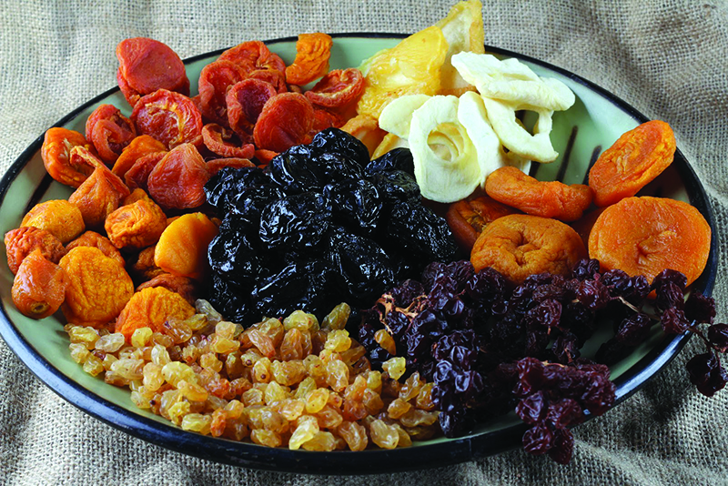

Nutrición
Mesa dulce en las Fiestas

por Vanina F. Repun Lic. en Nutrición especializada en Alimentación Vegetariana
www.inteligentenutricion.blogspot.com
vanina.repun@gmail.com
Se acerca fin de año y no sólo podemos evitar la GULA en las fiestas, sino que hasta podemos empezar el año aprovechando la oportunidad y ejerciendo "nutrición inteligente"…
IMPORTANTE: Son frutas naturales sometidas a un proceso de deshidratación (se les saca el agua) para preservarlas más tiempo y evitar la contaminación por micro organismos. Queda un sabor más concentrado y un aporte nutricional más intensificado… interesante, no?
Hay varias, de distintos colores y sabores, lo que permite que todo paladar con alguna sea feliz:
-Ciruela: Se caracteriza por su efecto laxante, tiene bastante fibra, potasio, fósforo, calcio y hierro. Además es vasodilatador arterial (eso quiere decir que dilata los vasos sanguíneos, evita que se compriman), por lo que se la considera protectora del corazón. Se puede dejar en remojo en un vaso con agua por la noche y beber en ayunas por la mañana.
-Durazno: Contiene fibra, potasio y fósforo. Tiene cobre y hierro por lo que es beneficioso para la sangre. Los árabes, les cuento que le meten a todo algo con sabor durazno y sus agridulces comidas son muyyy ricas y aceptadas… he probado hacer fatay vegetariano con mermelada de durazno y créanme, se los recomiendo.
-Damasco: Rico en potasio, bueno para corazón y músculos. Tiene fibra, cobre y magnesio, es alcalino. Les cuento que los HUNZAS, una población antigua que vivió TANTOS años que aún se estudia su dieta, tenían al damasco como protagónico en sus comidas… y no conocieron el cáncer ni la arterioesclerosis, ni tantas enfermedades que ahora son moneda frecuente… para pensarlo.
-Higo: Rico en calcio, tiene potasio, fósforo, hierro y vitaminas del complejo B. Es útil para el estreñimiento. Si hay algo DULCE en la vida son los higos, así que golosos NO se abstengan!
-Pera: Suaviza las mucosas, por lo que también se la recomienda para el estreñimiento, tiene zinc. Esta fruta es recomendada para los "un poco menos" golosos.
-Dátil: Aporta calcio, hierro, magnesio, fibra y potasio, fósforo y vitamina B3. Favorece el mantenimiento de los valores de colesterol dentro de los parámetros adecuados. Otro cuentito árabe (tengo mis raíces vieron): cuando alguien se muda es MUYYY importante que entre a la casa con aceite (para que nunca falte nada de comer) y con algo dulce (para que nunca falte la dulzura), en primera mudanza me regalaron dátiles por lo que ahora les tengo especial simpatía...
-Pasas de uva: Tienen vitaminas del grupo B, potasio, hierro, calcio y fósforo. Es vasodilatador (se acuerdan, más arriba que era vasodilatador?). Comentario extra: creo que es la fruta deshidratada más aceptada por los niños, así que en vez de golosinas "uvitas" para todo el mundo!!!
¿Cómo se logra?: Se pueden obtener por medios naturales, con deshidratadores o por exposición al sol.